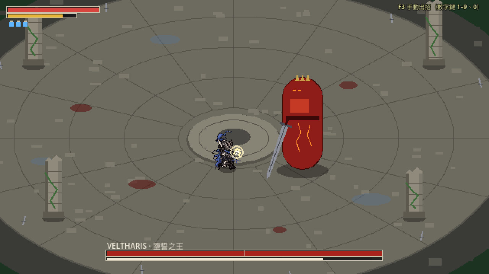
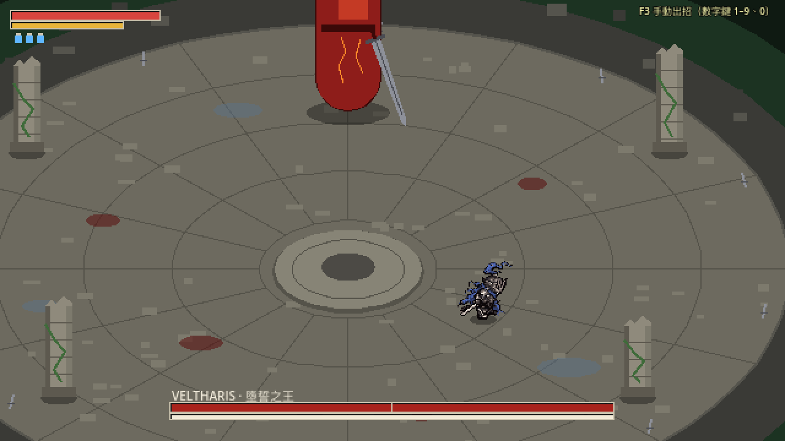
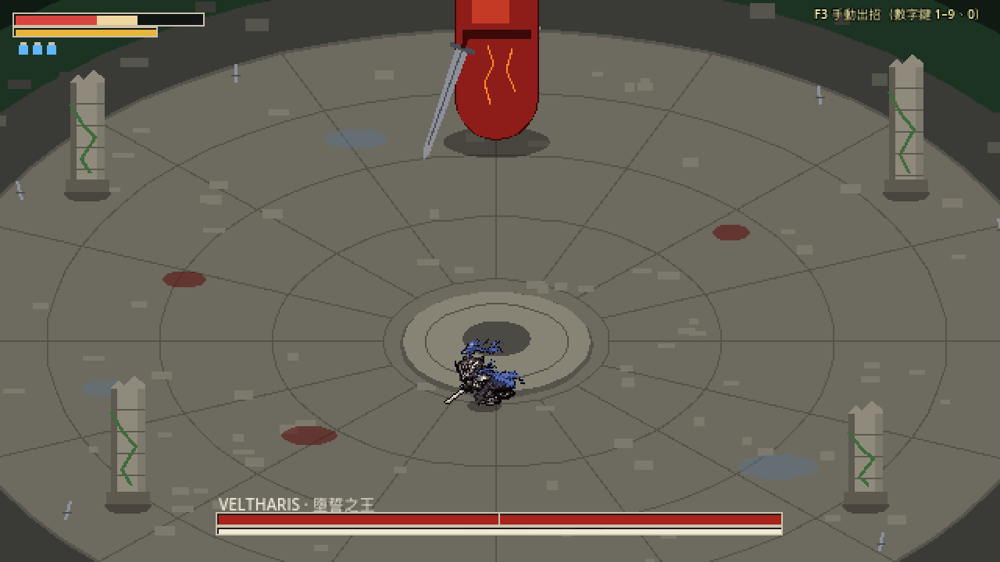
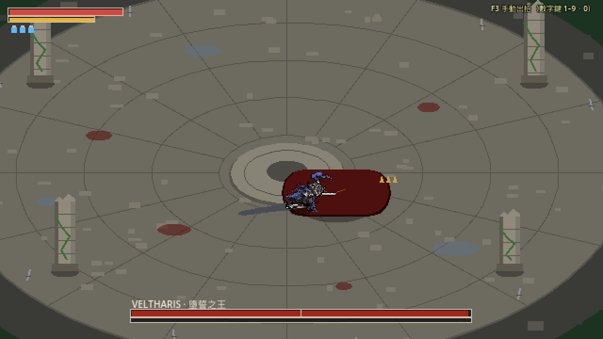
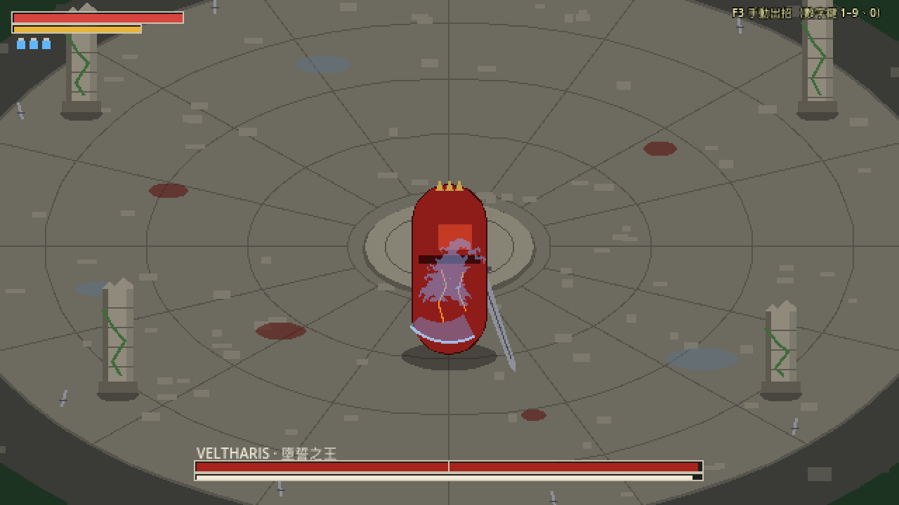

這些是在真正的遊戲場景裡錄的（不是另外做的預覽）：照腳本按鍵操作主角，每一格都是遊戲當下畫出來的畫面，60 格／秒，就是遊戲的速度。受擊、彈返時畫面會停一下（頓幀），那是遊戲本來的效果。刀光、火花、閃紅、殘影這些特效還是之前的暫時版本，等特效那一步再做。Boss 也還是暫時的紅色圖形。
走路、奔跑
站著呼吸 → 往右走 → 按住奔跑 → 放開（會把這一步踏完再煞停）→ 往下走、往上走。四個方向都是各自畫的。
四段輕攻擊：連按（朝右）
一直按攻擊：四刀接在一起，第四刀在轉身裡砍到；停頓之後又從第一刀開始。
四段輕攻擊：連按（朝下）
同上，朝鏡頭的方向。
四段輕攻擊：慢慢按
每一刀收回站姿時才按下一刀。這時下一刀從站姿開始揮，不是從上一刀的收尾接，所以不會跳一下。
格擋、完美彈返、舉劍移動
舉劍 → 被打中擋住（往後一縮）→ 放下再舉起、剛好擋在時間點上（劍被撥開、火花）→ 舉劍往上側移、往後退。
蓄力、突刺
蓄力 → 邊蓄邊往前走 → 蓄滿（全身閃一下白）放開突刺；第二次沒蓄滿就放開，收回站姿。
閃身
往前衝刺、煞停 → 沒按方向：原地往後跳 → 往下衝刺。
鎖定時閃身、移動
鎖定 Boss（在上方）後往右閃：衝出去時朝右，落地轉回面向 Boss；接著面向 Boss 往左側走、往後退。
治療
原地治療，中途往左走：治療的姿勢加上慢步。
受擊
從左邊被打：踉蹌（朝向打他的方向）→ 從右邊被重擊：轉身撲倒、趴著、爬起來 → 從左邊被擊飛：飛起、落地、爬起來。
架勢崩潰
格擋時架勢被打空：膝蓋一軟、單膝跪地搖晃，再撐起來。
死亡
和倒地同樣的摔法，但比較慢，之後畫面變暗。
處決（朝右）
第一刀把 Boss 打到失衡跪地，再按攻擊：衝上去刺中（白色閃光、停一下），收劍。
處決（朝下）
主角在 Boss 後面時，Boss 跪著會擋住主角，所以顯示半透明剪影；Boss 倒下後就看得到主角本身。
從奔跑直接接動作請看這個
跑步中直接出招、舉劍、蓄力、治療，最後是舉劍移動中直接出招。跑步是往前傾的大步，接下一個動作的第一張會一口氣換姿勢（腳最多移 16 像素）。當初核准時說好接進遊戲後要實際看，請看會不會覺得跳。
被 Boss 擋住時的剪影新加的
主角站在 Boss 正後方時原本會整個被擋住（連揮刀都看不到）。現在被擋住一半以上時，在 Boss 身上畫一個半透明的主角剪影，看得出姿勢；走出來剪影就消失。
整個畫面（遊戲的 2 倍）




